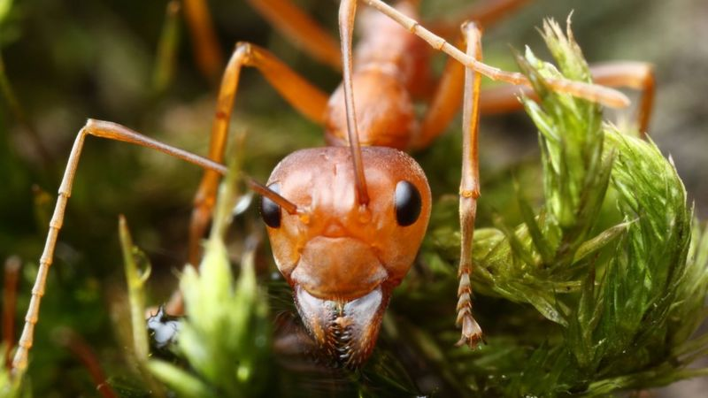
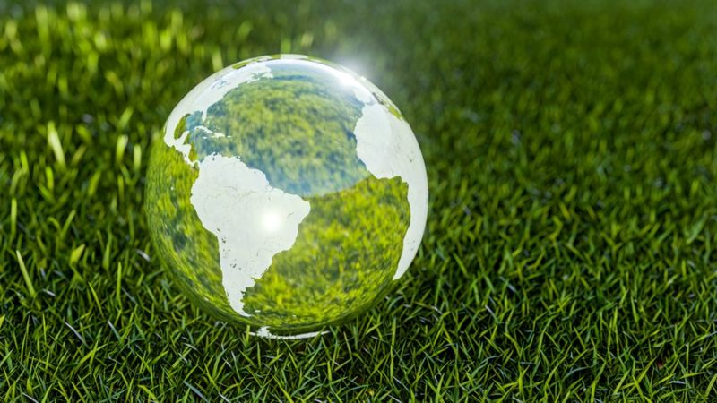

En las últimas semanas el precio del bitcoin ha llegado a máximos históricos.
Si el bitcoin fuera un país, consumiría más electricidad al año que Finlandia, Suiza o Argentina, según un análisis del Centro de Finanzas Alternativas de la Universidad de Cambridge (CCAF, por sus siglas en inglés).
Eso ocurre porque el proceso de "minar" la criptomoneda -utilizando gigantescos servidores que no cesan de trabajar- consume mucha energía.
Según los investigadores, la minería de bitcoins utiliza cerca de 121,36 teravatios-hora (TWh) de electricidad al año, un récord que provoca un fuerte impacto en el medioambiente y supera a una larga lista de países.
El tema volvió al debate luego que Elon Musk, a través de su empresa de autos eléctricos Tesla, reportó la compra de US$1.500 millones en bitcoin, disparando el precio de la divisa y encendiendo críticas por la contaminación que genera.
Esta última subida del precio del bitcoin -que ha seguido una meteórica tendencia alcista en los últimos meses- le ha dado nuevos incentivos a los mineros de la divisa para hacer funcionar más y más ordenadores con el objetivo de generar más criptomonedas.
Quizás también te interese
Cómo son las "hormigas esclavistas" que capturan a otras hormigas para que sean sus obreras
 href=""https://www.bbc.com/mundo/noticias-58305816"" 